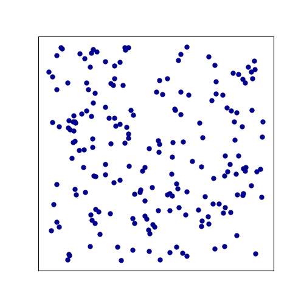
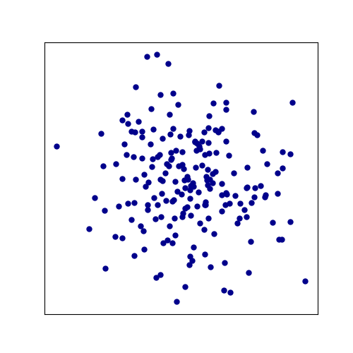
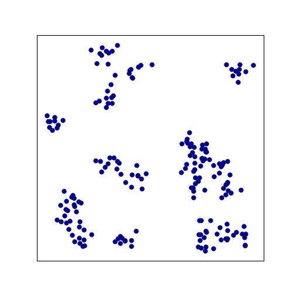

Common CO Problems in ML4CO
Last updated on August 23, 2025 pm
本文介绍了 ML4CO 中经常被研究的组合优化问题（如 TSP 等选边问题和 MIS 等选点问题）及相应的数据集生成算法。
TSP (Traveling Salesman Problem)
旅行商问题（TSP）是组合优化领域中最经典、最具代表性的问题之一，属于选边的问题。
问题描述
这边引用 [2] 中的一段非常有趣的描述：
Imagine yourself travelling to a scientific conference. The field is popular, and surely you do not want to miss out on anything. You have selected several posters you want to visit, and naturally you must return to the place where you are now: the coffee corner. In which order should you visit the posters, to minimize your time walking around? This is the Travelling Scientist Problem (TSP).
You realize that your problem is equivalent to the Travelling Salesman Problem (conveniently also TSP). This seems discouraging as you know the problem is (NP-)hard.
旅行商问题一般描述为：给定一组城市及它们之间的距离（或代价），一名旅行商需要从其中一个城市出发，访问每个城市恰好一次，最终返回出发城市。目标是找到一条总行程距离最短的路径。
或者更 formal 的表述：给定一个加权无向完全图，找出一条通过图中每一个节点一次且仅一次，并最终返回起始节点的回路，使得该回路上所有边的权重之和最小。
在 ML4CO 中，我们一般研究二维欧几里得情形的 TSP 问题，并将距离视为权重，即
- 输入：
points：N个顶点的坐标，形状为(B, N, 2)
- 输出：
tours：访问每个顶点的顺序（含返回起点），形状为(B, N+1)
- 目标值：回路总长度，越小越好
生成方法
按照惯例，我们一般生成固定顶点数的数据集。
Uniform（均匀分布）
1 | |
即在单位正方形内完全随机地撒点。生成的节点会非常均匀地、无规律地散布在 范围内的正方形区域里。这种数据是TSP问题中最基础、最通用的基准测试类型。

Gaussian（高斯分布）
1 | |
节点从高斯分布中采样，即让所有节点都围绕着一个中心点密集分布，越靠近中心越密集，越远离中心越稀疏。这种分布模式在现实世界中也很常见，比如模拟一个城市群，其中有一个中心大城市和周围的卫星城。

Cluster（簇状分布）
1 | |
Cluster 的生成过程是：先随机确定几个聚集中心，然后让节点分别围绕着这几个中心形成多个小团体（簇）。因此，生成的节点呈现出明显的簇结构，簇内节点距离近，簇间节点距离远。这种数据分布非常贴近许多现实世界的物流问题，例如需要去几个不同的城市群送货，每个城市群内部又有多个配送点。
对于 TSP 求解器来说，这种结构通常更具挑战性，因为它需要在“先跑完一个簇再到下一个”和“在不同簇之间来回穿梭以寻找更优路径”之间做出权衡。

ATSP (Asymmetric Traveling Salesman Problem)
非对称旅行商问题（ATSP）是 TSP 问题的一个重要变种。其核心区别在于，从城市 A 到城市 B 的距离（或代价）不一定等于从城市 B 到城市 A 的距离（或代价）。这非常贴近现实场景，例如考虑城市中的单行道、不同的去程与返程机票价格、因上下坡导致的油耗或时间差异等情况。
问题描述
ATSP 问题可以描述为：给定一个加权有向完全图，找出一条通过图中每一个节点一次且仅一次，并最终返回起始节点的回路，使得该回路上所有边的权重之和最小。
ATSP 与 TSP 的核心差异在于有向图，即边的权重是非对称的。其输入输出如下：
- 输入：
dists：N个顶点之间的距离（即权重）矩阵，形状为(B, N, N)
- 输出：
tours：访问每个顶点的顺序（含返回起点），形状为(B, N+1)
- 目标值：回路上所有边的距离（即权重）之和，越小越好
生成方法
Uniform
这种方法生成的是最经典的 ATSP 实例，其核心特点是距离矩阵中的值是连续的，并且满足三角不等式。
生成步骤是：
- 初始化一个距离矩阵 ，其中的值从一个很大的范围 内（如 ）均匀随机抽取。
- 通过迭代来强制满足三角不等式：不断检查是否存在 的情况。如果存在，就用更短的路径 来更新 的值。这个过程重复进行，直到矩阵中不再有任何可以更新的值。（本质上是 Floyd-Warshall 算法的应用，用来寻找所有节点对之间的最短路径。）
- 最后，将矩阵的对角线元素 设置为 ，并将整个矩阵通过除以 来归一化到 区间。
这种方法生成的实例没有已知的最优解。
HCP
这是一种将哈密顿回路问题（HCP）转化为 ATSP 问题的方法，其特点是距离矩阵是二元的（只有 0 和 1）。
生成方式是：先构建一条哈密顿回路，在距离矩阵中将该回路中边的权重设置为 0，其余边的权重设置为 1。再加入一定的噪声，即随机选择一些原本权重为 1 的路径，并将它们的权重也设置为 0。
不难发现，这样构造出的 ATSP 实例具有已知最优解，并且其成本为 0。
SAT
这是一种将 3-SAT 问题转化为 ATSP 问题的方法。其特点与 HCP 分布类似，即距离矩阵是二元的（只有 0 和 1），具有已知且成本为 0 的最优解。
生成方式是：先为所有变量预设一组满足解，再根据这个满足解构造出一个保证可满足的 3-SAT 实例，最后由这个 3-SAT 实例按照某种方法生成对应的一张有向图，该有向图的邻接矩阵（有连接为 1，无连接为 0）即为生成 ATSP 实例的距离矩阵。
这种从 3-SAT 实例到有向图的方法，能够满足：当且仅当原始的 3-SAT 问题有解时，图中才存在有向哈密顿回路。（事实上，AI2615 中就讲过这个将 3-SAT 问题归约到有向哈密顿回路的方法。）因此，这样构造出的 ATSP 实例能够保证具有已知且成本为 0 的最优解。
CVRP (Capacitated Vehicle Routing Problem)
CVRP 是运筹学和物流领域最核心、最经典的路由问题之一。
问题描述
简单来说，CVRP 问题旨在解决一个现实世界中无处不在的挑战：如何规划一支有容量限制的车队，从一个仓库出发，以最低的总成本（通常是总行驶距离）服务完所有客户的需求，并最终返回仓库，即问题的目标是在满足所有客户需求和车辆容量限制的前提下，最小化车队行驶的总距离（或总成本）。
CVRP 问题的输入输出如下：
- 输入：
depots：仓库的位置坐标，形状为(B, 2)points：客户的位置坐标，形状为(B, N, 2)demands：每个客户的需求，形状为(B, N)capacities：货车的容量，形状为(B,)（每辆货车容量相同）
- 输出：
tours：每辆车行驶的路径，是一个由客户节点索引（1到N）和仓库节点索引（0）组成的序列，多个0用于分隔不同车辆的路径，形状为(B, L_max)，其中L_max是最长解的长度
- 目标值：车队行驶的总距离，越小越好
生成方法
首先是 depots 和 points 的生成，一般采用和 TSP 相同的 uniform 或 gaussian 分布。
其次是 demands 和 capacities 的生成，通常采用在某一范围内生成随机数的方法。
OP (Orienteering Problem)
OP 问题是 TSP 问题和 KP 问题的结合，广泛应用于需要在成本预算下最大化收益的路径规划和调度的场景中。[9]
问题描述
OP 问题可以描述为：给定一系列带有不同奖励的地点、一个起点和一个终点（通常是同一个），目标是找出一条路径，这条路径访问一部分地点，使得收集到的总奖励最大，同时确保旅行总距离不超过预设的最大距离。
OP 问题的输入输出如下：
- 输入：
depots：起点（也是终点）的位置坐标，形状为(B, 2)points：地点的位置坐标，形状为(B, N, 2)prizes：每个地点带有的奖励，形状为(B, N)max_lengths：最大路径长度，形状为(B,)
- 输出：
tours：路径访问顶点的顺序，形状为(B, L_max)，其中L_max是最长解的长度
- 目标值：收集到的总奖励，越大越好
生成方法
首先是 depots 和 points 的生成，一般采用和 TSP 相同的 uniform 分布。
其次是 prizes 的生成，有三种常见的方式：
constant：每个节点都分配固定的奖励值，如1.0；uniform：每个节点的奖励值均匀分布；dist：奖励值与节点到 depot 的距离成正比，模拟了越远的客户越有价值的场景。
PCTSP (Prize Collection Traveling Salesman Problem)
PCTSP 问题是 TSP 问题的一个重要变体，引入了奖励和惩罚的概念。
问题描述
PCTSP 问题可以描述为：给定一系列地点，每个地点有对应的奖励和惩罚，一个起点（也是终点），目标是寻找一条路径，使得收集到的总奖励不少于一个最低总奖励的前提下，总旅行距离与所有未访问节点的惩罚之和最小。
PCTSP 问题的输入输出如下：
- 输入：
depots：起点（也是终点）的位置坐标，形状为(B, 2)points：每个地点的位置坐标，形状为(B, N, 2)prizes：每个地点对应的奖励，形状为(B, N)penalties：每个地点对应的惩罚，形状为(B, N)
- 输出：
tours：路径访问顶点的顺序，形状为(B, L_max)，其中L_max是最长解的长度
- 目标值：总旅行距离加上所有未访问节点的惩罚之和，越小越好
生成方法
一般采用 uniform 分布，即 depots 和 points 在 内随机生成，prizes 和 penalties 在某一范围内随机生成。
MIS (Maximum Independent Set)
我们进入选点的组合优化问题，首先是最经典的最大独立集问题（MIS）。
问题描述
MIS 问题可以描述为：给定一个无向图 ，找一个最大的顶点子集 ，使得 中任意两个顶点之间都没有边直接相连。
MIS 问题的输入输出如下：
- 输入：
edge_index：每条边连接的顶点索引，形状为(B, 2, E)
- 输出：
nodes_label：每个节点在解中是否被选中，选中为 1，未选中为 0，形状为(B, V)
- 目标值：独立集中顶点的个数，越大越好
生成方式
MIS、MCl、MCut、MVC 等选边问题的数据生成方式是一致的，常见的有如下几种。
RB
RB 图是由 RB 模型[3]生成的，常用作模拟社交网络中不同社群之间的互动。其特点是：存在多个内部紧密的社群（即图论中的团，任意两个节点之间都存在边），在这些群体之间有稀疏的连接。
RB 图的生成有三个核心参数：
n: 图中“团”（社群）的数量k: 每个“团”内部节点的数量p: 用于控制不同“团”之间的连接密度（p越大，社群间的连接越紧密）
RB 图的生成过程是：先创建多个独立的团，再在团之间建立连接，连接的密度由参数 p 控制。
BA (Barabási-Albert)
你是否注意到，在社交网络上，少数名人拥有数千万粉丝，而大多数普通人的关注者寥寥无几；在航空网络中，少数几个枢纽机场连接着成百上千条航线，而绝大多数地方机场只有几条航线。这种高度不均匀的连接分布就是无标度（scale-free）网络的标志。
BA 图[4]最核心的特征是无标度性。节点的度遵循幂律分布，即图中存在少量拥有极高连接数的中心节点，以及大量只有很少连接的末端节点。
BA 图的生成过程是：网络从一个很小的初始核心开始，节点一个接一个地加入。当一个新节点加入网络时，它不会随机地选择旧节点进行连接。相反，它更倾向于连接那些已经拥有很多连接的节点。这样，就形成了 BA 图的无标度特征。
HK (Holme-Kim)
HK 图[5]在保留 BA 图无标度特性的基础上，显著提高网络的聚集系数。与 BA 图一样，HK 图中节点的度仍遵循幂律分布。但节点的邻居之间也倾向于相互连接，使得网络中存在大量三角形结构。这与真实社交网络中紧密的“小圈子”或社群现象类似。
HK 图的生成过程与 BA 图相似。不同之处在于，当新节点选择连接到某一旧节点时，会以概率 额外连接到其该旧节点的一个随机邻居。这个步骤极大地促进了三角形的形成，从而提高了网络的聚集系数。
HK 图能较好模拟现实生活中的复杂系统，如社交网络、生态系统等。
WS (Watts-Strogatz)
为什么在这个拥有数十亿人口的星球上，你与任何一个陌生人之间，平均只隔着几个人？这被称为小世界（Small-world）效应，也是 WS 图的特点之一。
与 HK 图类似，WS 图[6]中的节点也具有高度聚集性。但同时，WS 图具有小世界效应，即节点间的平均路径长度很短。这种特性来自于模型中引入的少量随机“捷径”。
WS 图的生成过程可以概括为，先创建一个规则的环形网络，再引入随机的捷径。首先，想象所有节点排列在一个圆环上，并与圆环上最近的 个邻居相连，构建了一个高度有序且局部连接紧密（高聚集性）的网络。接着，对每一条边以一定概率 进行重连操作，即断开该边的一端，并将其随机连接到任意一个其他节点上。这一操作创造了随机的“长程连接”，急剧地缩短了整个网络的平均路径长度。
ER (Erdős-Rényi)
ER 模型是随机图理论的开山之作，它不试图模仿任何特定的现实世界结构，而是提出了一个最纯粹、最简单的问题：如果我们在一些节点之间完全随机地连边，会得到一个什么样的网络？
与之前的所有图都不同，ER 图[7]的特点在于完全没有特点，或者说，它的特点就是均匀的随机性。任意两节点之间都以一定概率 连接，与网络中任何其他地方的结构都毫无关系。由于其纯粹的随机性，ER 图在结构上是同质的，即图中几乎没有特殊的节点。节点的度分布近似于泊松分布，度极高或度极低的节点都非常罕见，绝大多数节点的度都非常接近整个网络的平均值。
TWITTER [8]是一个真实数据集，来自斯坦福网络分析项目（Stanford Network Analysis Project）。它是对一个真实世界社交网络的快照，直接反映了数百万用户之间复杂的关注关系。TWITTER 常被用于评估泛化能力。
SATLIB
SATLIB 是一个经典的 SAT 数据集，通过将 SAT 问题转化为 MIS 问题（这在 AI2615 的 NP-complete 部分中有类似方法），我们可以获得用于 MIS 的图。SATLIB 图的特点是非常稠密。
MCl (Maximum Clique)
最大团问题（MCl）是最大独立集问题（MIS）的对偶问题，它们之间的关系通过补图建立。
问题描述
MCl 问题可以描述为：给定一个无向图 ，找一个最大顶点子集 ，使得 中任意两个顶点之间都有一条边直接相连。
MCl 问题的输入输出如下：
- 输入：
edge_index：每条边连接的顶点索引，形状为(2, E)
- 输出：
nodes_label：每个节点在解中是否被选中，选中为 1，未选中为 0，形状为(V,)
- 目标值：团中顶点的个数，越大越好
生成方法
和 MIS 一致。
MCut (Maximum Cut)
问题描述
最小割问题（MCut）可以描述为：给定一个无向图 ，将图中的所有顶点 划分成两个互不相交的非空子集 和 ，要找到一种划分方式，使得横跨这两个子集（即一个端点在 中，另一个端点在 中）的边的数量最少。
最小割问题的输入输出如下：
- 输入：
edge_index：每条边连接的顶点索引，形状为(B, 2, E)
- 输出：
nodes_label：每个节点所属的分割子集标签，如属于子集 的为 ，属于子集 的为 ，形状为(B, V)
- 目标值：割的大小（即横跨两个子集的边的数量），越小越好
生成方法
和 MIS 一致。
MVC (Minimum Vertex Cover)
问题描述
最小顶点覆盖问题（MVC）可以描述为：给定一个无向图 ，找一个最小的顶点子集 ，使得图中的每一条边都至少有一个端点在这个子集 中。
MVC 问题的输入输出如下：
- 输入：
edge_index：每条边连接的顶点索引，形状为(B, 2, E)
- 输出：
nodes_label：每个节点在解中是否被选中，选中为 1，未选中为 0，形状为(B, V)
- 目标值：覆盖集中顶点的个数，越小越好
事实上，一个顶点集合 是图 的一个顶点覆盖，当且仅当它的补集 是图 的一个独立集。因此，求解一个图的最小顶点覆盖问题，等价于求解它的最大独立集问题。
生成方法
和 MIS 一致。
KP (Knapsack Problem)
背包问题（KP）是著名的组合优化问题。
问题描述
KP 问题可描述为：给定一系列物品，及每个物品的重量和价值，目标是挑选一部分物品放入背包，使得其总重量不超过背包容量的条件下，选择物品的总价值尽可能大。
KP 问题的输入输出如下：
- 输入：
weights：每个物品的重量，形状为(B, N)values：每个物品的价值，形状为(B, N)capacities：背包容量，形状为(B,)
- 输出：
items_label：每个物品是否被选中，形状为(B, N)
- 目标值：被选中物品的总价值，越大越好
生成方法
一般采用 uniform 分布，即 weights、values 和 capacities 都在某一范围内随机生成。
参考资料
[1] https://github.com/Thinklab-SJTU/ML4CO-Kit
[2] W. Kool, H. Van Hoof, and M. Welling, “Attention, learn to solve routing problems!” arXiv preprint arXiv:1803.08475,2018.
[3] K. Xu, F. Boussemart, F. Hemery, and C. Lecoutre, “A simple model to generate hard satisfiable instances,” arXiv preprint cs/0509032, 2005.
[4] A.-L. Barabási and R. Albert, “Emergence of scaling in random networks,” science, vol. 286, no. 5439, pp. 509–512, 1999.
[5] P. Holme and B. J. Kim, “Growing scale-free networks with tunable clustering,” Physical review E, vol. 65, no. 2, p. 026107, 2002.
[6] D. J. Watts and S. H. Strogatz, “Collective dynamics of ‘small-world’networks,” nature, vol. 393, no. 6684, pp. 440–442, 1998.
[7] P. Erd6s and A. Rényi, “On the evolution of random graphs,” Publ. Math. Inst. Hungar. Acad. Sci, vol. 5, pp. 17–61, 1960.
[8] L. Jure, “Snap datasets: Stanford large network dataset collection,” Retrieved December 2021 from http://snap.stanford.edu/data, 2014.
[9] D. Drakulic, S. Michel, and J.-M. Andreoli, “GOAL: A generalist combinatorial optimization agent learner,” in The Thirteenth International Conference on Learning Representations, 2025.